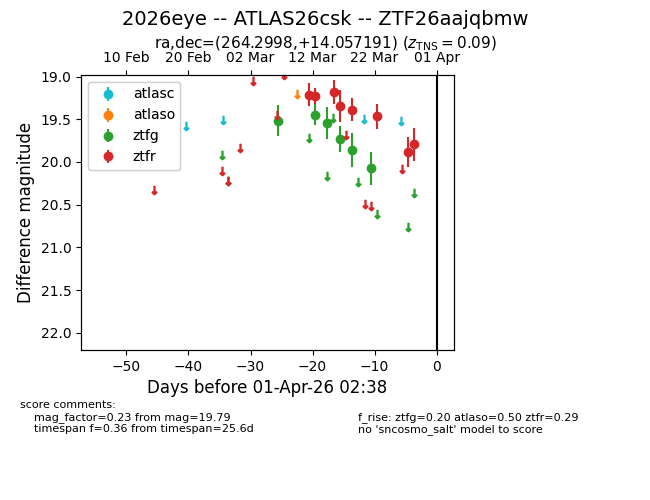
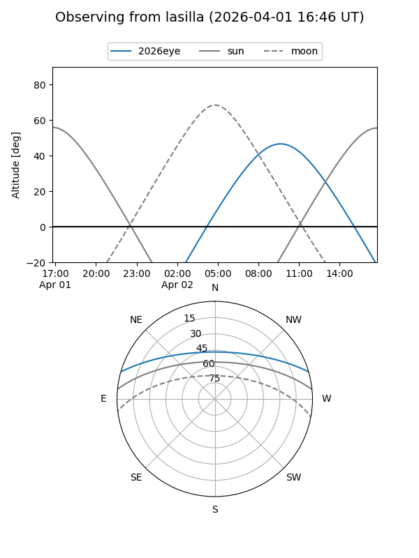
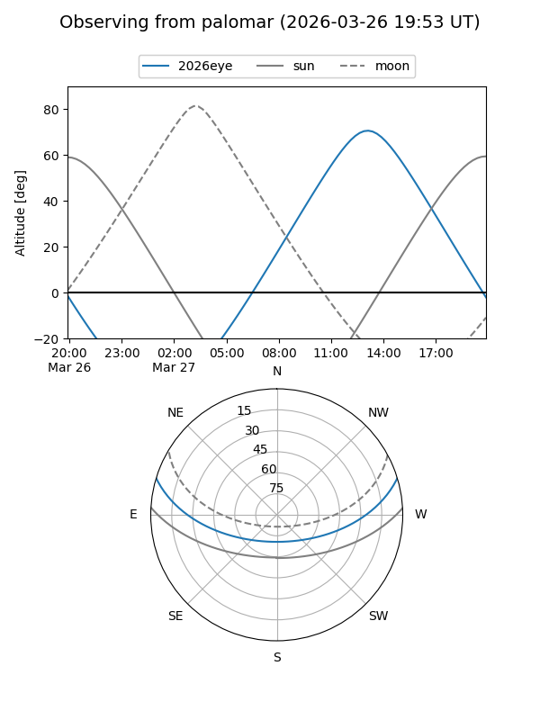
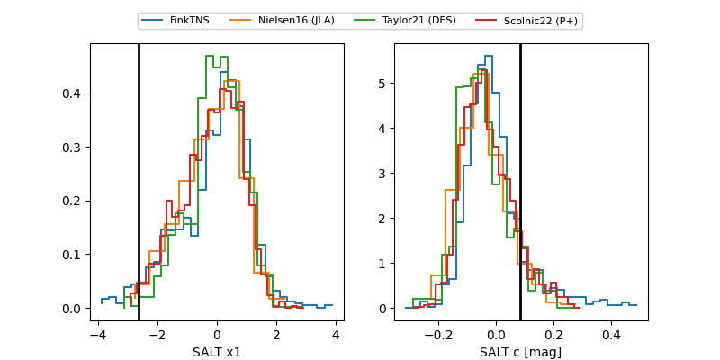

2026eye
Target 2026eye at 2026-04-01 02:41
Aliases and brokers:
FINK: link
Lasair: link
ALeRCE: link
TNS: link
YSE: link
alt names
ZTF26aajqbmw (ztf,fink_ztf)
2026eye (tns,yse)
ATLAS26csk (atlas)
Coordinates:
equatorial (ra, dec) = 264.2998,+14.05719
equatorial (HMS+DMS) = 17:37:11.95,+14:03:25.89
galactic (l, b) = (37.6180,+22.67772)
Flags:
confirmed ia
Photometry:
last atlaso=nan, ztfg=20.08, ztfr=19.79
1 atlaso, 6 ztfg, 8 ztfr detections
Lightcurve

Visibility


Additional plots
